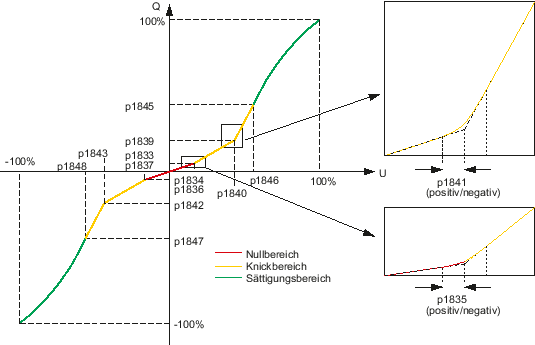
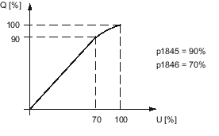
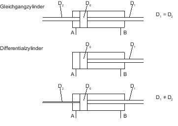

Übersicht
Die Ventilkennlinie stellt die Kolbengeschwindigkeit in Abhängigkeit von der Ventilstellspannung als Prozentwerte dar. Im Antrieb wird nicht die wirkliche Kennlinie, sondern eine vereinfachte Kennlinie hinterlegt. Die vereinfachte Kennlinie ist abschnittsweise aus Geraden- und Parabelstücken zusammengesetzt. Die Abschnitte werden über 16 Parameter definiert.
Die vereinfachte Ventilkennlinie soll der wirklichen Kennlinie möglichst nahekommen. Um die Annäherung zu erreichen, müssen Sie folgende Schritte durchführen:
-
Messung der wirklichen Kennlinie
-
Automatische Berechnung der vereinfachten Kennlinie durchführen
-
Vereinfachte Kennlinie manuell optimieren
Für die Messung der Ventilkennlinie müssen Sie einige Parameter eingegeben.
Gemessene Kennlinie
Zur Messung der Kennlinie fährt der Kolben mit wachsender Geschwindigkeit zwischen den Endpunkten hin und her. Dabei werden Messwerte für beide Bewegungsrichtungen erzeugt. Die gemessene Kennlinie besteht aus maximal 512 Messpunkten. Eine im Antrieb hinterlegte Kennlinie ist spezifisch für einen Antriebsdatensatz (DDS). Die Messung der Kennlinie, aus der die im Antrieb hinterlegte Kennlinie ermittelt wird, bezieht sich dementsprechend immer auf den aktiven Antriebsdatensatz.
Vereinfachte Kennlinie
Die vereinfachte Ventilkennlinie ist aus 8 Abschnitten zusammengesetzt.
Die vereinfachte Kennlinie besteht ausgehend vom Nullpunkt aus einer kurzen Geraden, dem Nullbereich, die durch eine Parabel verrundet in eine weitere Gerade des Knickbereichs übergeht. Die Gerade des Knickbereichs geht ebenfalls durch eine Parabel verrundet in den Sättigungsbereich über. Dieser beginnt zuerst mit einer Geraden und geht dann tangentenstetig in eine nach unten offene Parabel über, die im Punkt Q = 100 %, U = 100 % endet.
Knickpunkte der vereinfachten Kennlinie
Die nichtlineare Kennlinie von Ventilen wird durch mehrere Teilbereiche abgebildet. Ein Knick ist bei realen Ventilen verrundet. Deswegen wird ein Knick in der Kompensation ebenfalls verrundet. Die Verrundung wird nach einer Wurzelkennlinie so durchgeführt, dass die Anschlussstellen tangentenstetig sind, wobei der Verrundungsbereich parametriert werden kann.
Der Knickpunkt wird mit dem Prozentwert für Eingang (Spannung) und Ausgang (Volumenstrom) festgelegt.
Knick im Nullbereich
Zur Berechnung der inversen Kennlinie wird mit p1833 und p1834 ein Knickpunkt im positiven bzw. mit p1836 und p1837 im negativen Nullbereich der Ventilkennlinie festgelegt.
In p1833 wird der positive und in p1836 der negative Ventilvolumenstrom im Knickpunkt bezogen auf den Nennvolumenstrom eingetragen.
In p1834 wird die positive und in p1837 die negative Ventilspannung im Knickpunkt bezogen auf die Ventilnennspannung eingetragen.
Bei Werkseinstellung "0" in p1834 ist kein Knick im positiven Nullbereich vorhanden. Bei Werkseinstellung "0" in p1837 ist kein Knick im negativen Nullbereich vorhanden.
Der Verrundungsbereich wird in p1835 parametriert.Knick im Knickbereich
Zur Berechnung der inversen Kennlinie wird mit p1839 und p1840 der Knickpunkt im positiven bzw. mit p1842 und p1843 im negativen Quadranten der Ventilkennlinie festgelegt.
In p1839 wird der positive und in p1842 der negative Ventilvolumenstrom im Knickpunkt bezogen auf den Nennvolumenstrom eingetragen.
In p1840 wird die positive und in p1843 die negative Ventilspannung im Knickpunkt bezogen auf die Ventilnennspannung eingetragen.
Bei gleichen Werten (Standardwert) in p1839 und p1840 ist die Kennlinie linear, ohne Knick im Nullbereich (Standardwert) und ohne Sättigung (Standardwert).Diese Knickdaten werden durch "Reglerdaten berechnen" aus den Ventildaten (p0205, p0206) vorbelegt. Eine spätere Veränderung ist möglich. Der Verrundungsbereich ist kein Ventildatum und wird deshalb auch nur mit einem Standardwert vorbelegt, kann aber mit dem Datum p1841 verändert werden. Er kann bei Bedarf über eine Messung genauer angepasst werden.
Hinweis Eine konstante Bearbeitungsgeschwindigkeit des Antriebs, die direkt im Knickpunkt des Ventils liegt, ist nicht zu empfehlen.
Knick im Beginn eines Sättigungsbereichs
Zur Berechnung der inversen Kennlinie wird mit p1845 und p1846 bzw. mit p1847 und p1848 der Beginn eines parabelförmig verrundeten Sättigungsbereichs im positiven bzw. negativen Quadranten der Ventilkennlinie festgelegt.

In p1845 wird der positive und in p1847 der negative Ventilvolumenstrom zu Beginn des Sättigungsbereichs bezogen auf den Ventil-Nennvolumenstrom eingetragen.
In p1846 wird die positive und in p1848 die negative Ventilspannung bezogen auf die Ventilnennspannung eingetragen.
Der Sättigungsbereich wird durch eine Wurzelkennlinie so kompensiert, dass die Anschlussstelle tangentenstetig ist und die Kennlinie im Punkt (100 %, 100 %) endet.
Bei Standardwert 100% in p1845 und p1846 bzw. p1847 und p1848 ist kein Sättigungsbereich im positiven bzw. negativen Quadranten vorhanden.
Flächenanpassung/Streckenverstärkung
Bei der Ausführung des Zylinders muss zwischen Gleichgangzylinder und Differenzialzylinder unterschieden werden.
Bei Differenzialzylindern ist die wirksame Kolbenfläche in Vorwärtsrichtung anders als in Rückwärtsrichtung. Zur Kompensation muss die Flächenanpassung parametriert werden.
Das folgende Bild zeigt eine Beispielkennlinie zur Flächenanpassung und die Wirkungsweise der zugehörigen Maschinendaten. In der Praxis wird nur eine der beiden Steigungen mit einem Faktor ungleich 100 % bewertet. Üblicherweise wird die Steigung, die ein Ausfahren des Zylinderantriebs bewirkt, mit einem Faktor kleiner 100 % bewertet.